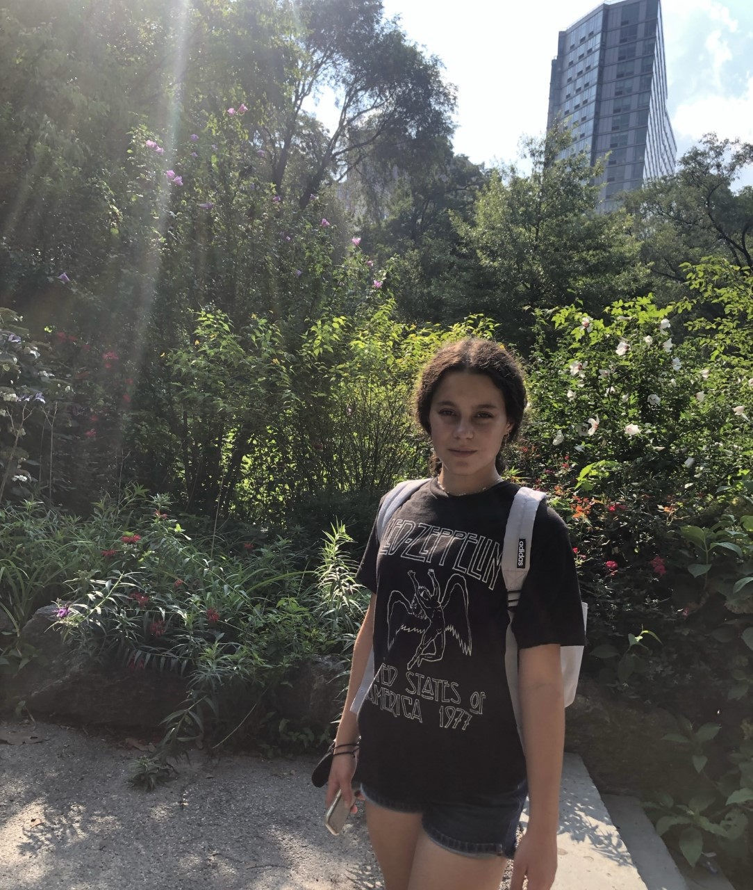

My name is Madailein Logan and I am a graduating senior at the Dayton Regional STEM School. In this website you will find the projects I have completed this year and past years, my experiences, my resume, my personal interests, and other relevant information.
About Me

I enjoy figure skating, playing the piano, reading, traveling, playing tennis, and playing hockey. I am interested in data analytics, computer science, and business. After graduation, I would like to go to college to pursue a Bachelor's degree in one of these fields. I am working towards earned triple gold in figure skating, completing my Girl Scout Gold Award, and growing my local CISV chapter as president. I have a younger sister and I live with my two parents.
Outside Links
The Dayton Regional STEM School (Click Here)